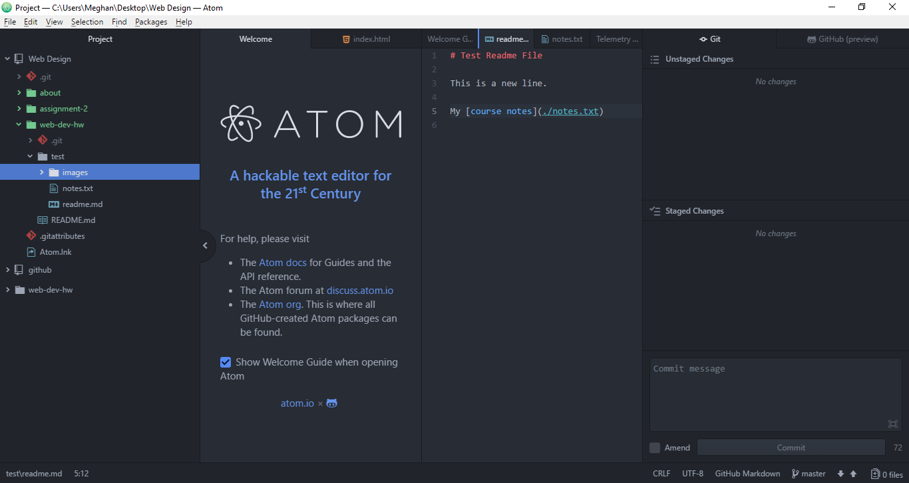

A little about me... Well, I'm the local weather anchor for ABC FOX Montana. I'm 24 years old and had no idea this is where life was taking me. I'm currently on my senior year of college and one of the first in my family to graduate with a Bachelor Degree.
Features:
Hair: Brown
Eyes: Brown
Mood: Brown
I like... broken-up preformatted elements.